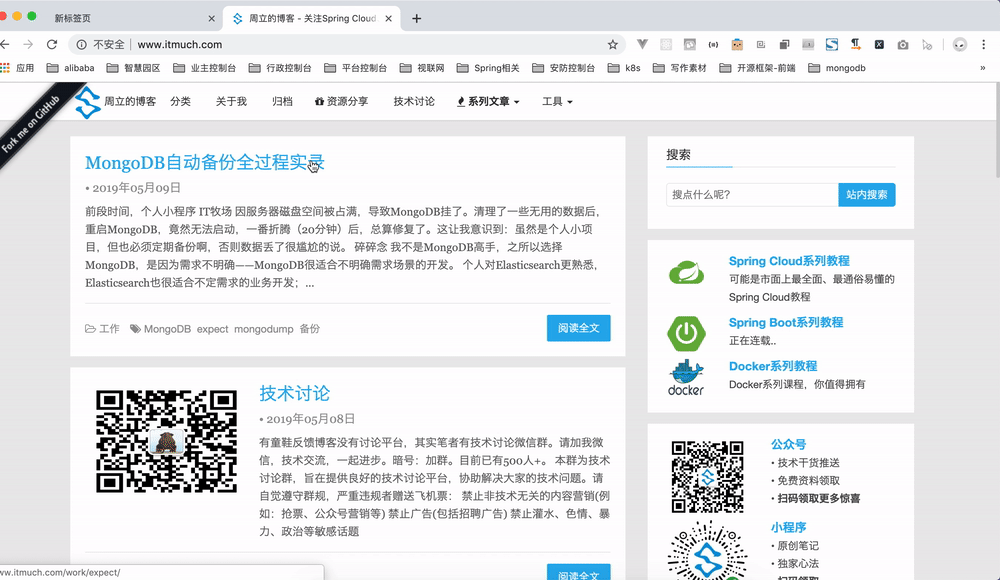
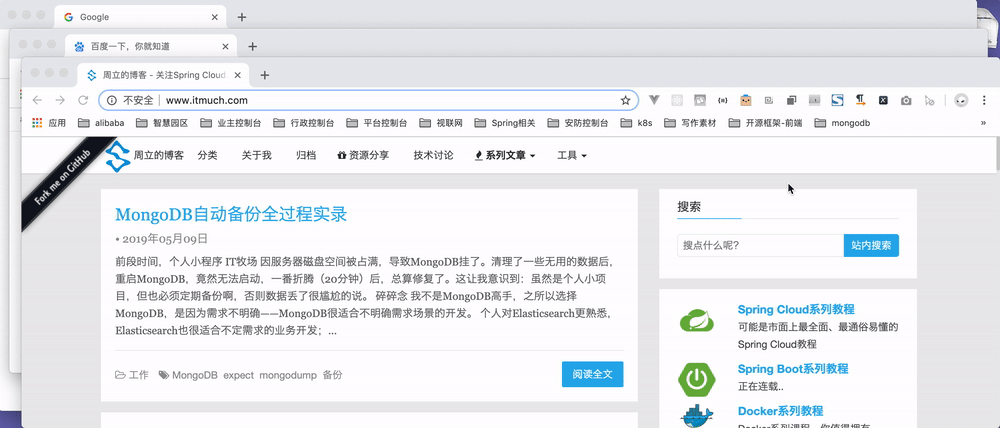
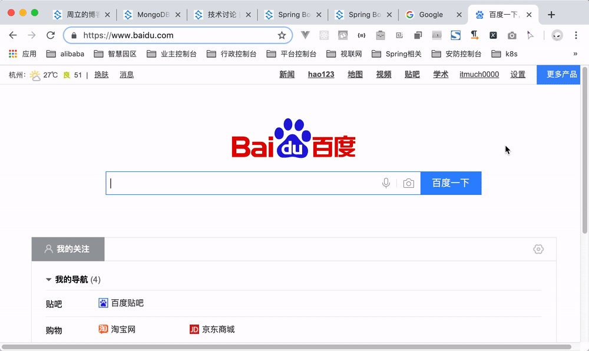
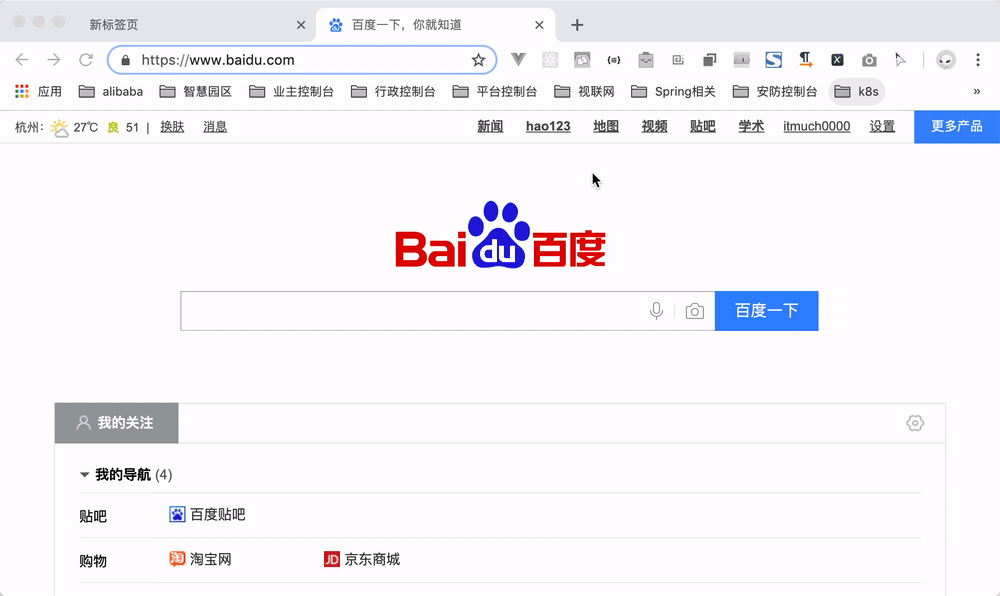
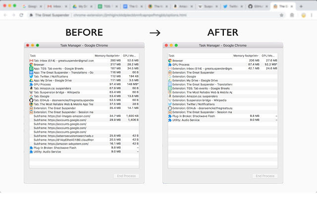
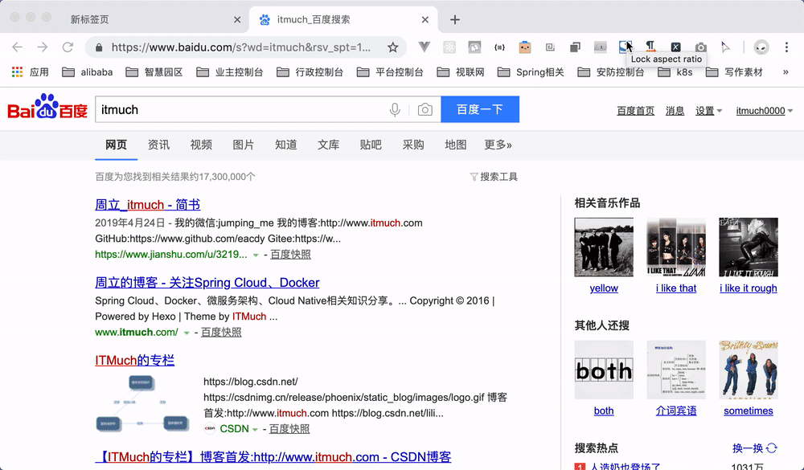
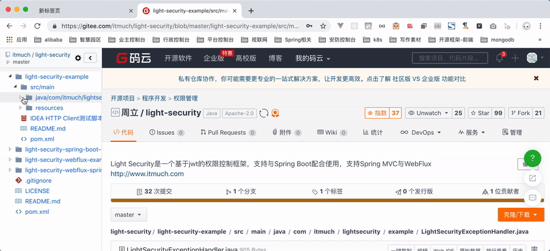
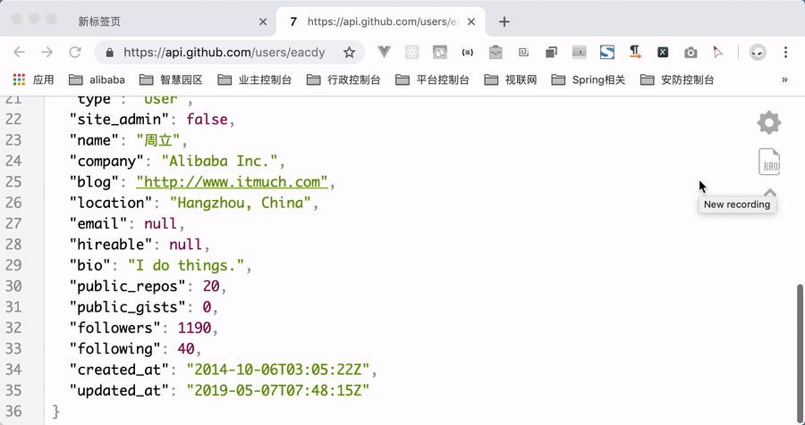
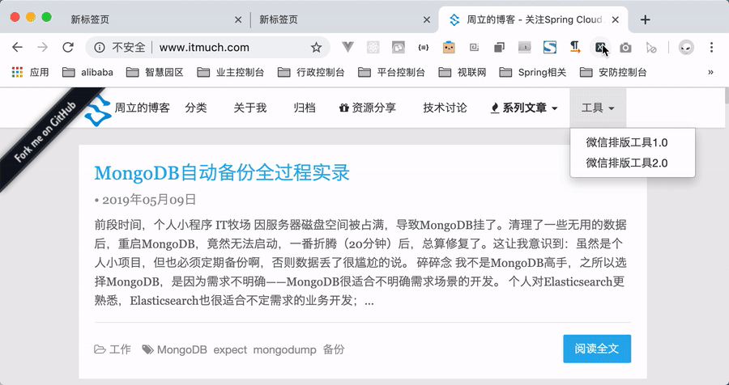
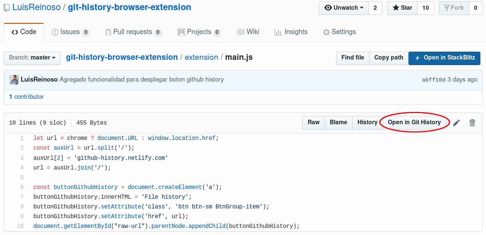

<!DOCTYPE HTML>
<html lang="zh-CN">
<head><meta name="generator" content="Hexo 3.8.0">
    <!--Setting-->
    <meta charset="UTF-8">
    <meta name="viewport" content="width=device-width, user-scalable=no, initial-scale=1.0, maximum-scale=1.0, minimum-scale=1.0">
    <meta http-equiv="X-UA-Compatible" content="IE=Edge,chrome=1">
    <meta http-equiv="Cache-Control" content="no-siteapp">
    <meta http-equiv="Cache-Control" content="no-transform">
    <meta http-equiv="pragma" content="no-cache">
    <meta http-equiv="Cache-Control" content="no-cache, must-revalidate">
    <meta http-equiv="expires" content="Mon Apr 06 2020 02:12:38 GMT+0800 (CST)">
    <meta name="renderer" content="webkit|ie-comp|ie-stand">
    <meta name="apple-mobile-web-app-capable" content="周立的博客 - 关注Spring Cloud、Docker">
    <meta name="apple-mobile-web-app-status-bar-style" content="black">
    <meta name="format-detection" content="telephone=no,email=no,adress=no">
    <meta name="browsermode" content="application">
    <meta name="screen-orientation" content="portrait">
    <meta name="theme-version" content="1.2.3">
    <meta name="root" content="/">
    
    <!--SEO-->

    <meta name="keywords" content="Chrome,Awesome">


    <meta name="description" content="本文推荐的10款插件笔者一直在用，部分插件可能有点冷门，但绝壁是提升效率的好帮手，在我眼里是必备插件。笔者已创建 GitHub仓库 ，欢迎分享、讨论。一起打造最强Chrome插件集。
1. CrxMouse Chrome™ Gestures作用：高度可自定义的鼠标手势、超级拖拽、鼠标滚轮手势、...">


<meta name="robots" content="all">
<meta name="google" content="all">
<meta name="googlebot" content="all">
<meta name="verify" content="all">
    <!--Title-->


<title>推荐10款笔者一直在使用的Chrome提效插件 | 周立的博客 - 关注Spring Cloud、Docker</title>


    <link rel="alternate" href="../../atom.html" title="周立的博客 - 关注Spring Cloud、Docker" type="application/atom+xml">


    

    


<link rel="stylesheet" href="../../static/css/bootstrap.min-271a649e0635d6fa1b.css">
<link rel="stylesheet" href="../../static/css/font-awesome.min-ac2bebcf7fb5b26.css">
<link rel="stylesheet" href="../../static/css/style-6f3c140f6eee20e6591da00ec0.css">


    


    <script>
        var _hmt = _hmt || [];
        (function() {
            var hm = document.createElement("script");
            hm.src = "https://hm.baidu.com/hm.js?13766878cde148282622871dd245a973";
            var s = document.getElementsByTagName("script")[0];
            s.parentNode.insertBefore(hm, s);
        })();
    </script>


    

</head>

</html>
<!--[if lte IE 8]>
<style>
    html{ font-size: 1em }
</style>
<![endif]-->
<!--[if lte IE 9]>
<div style="ie">你使用的浏览器版本过低，为了你更好的阅读体验，请更新浏览器的版本或者使用其他现代浏览器，比如Chrome、Firefox、Safari等。</div>
<![endif]-->

<body>
    
    <nav class="main-navigation">
    <div class="container">
        <div class="row clearfix">
            <div class="col-md-12 column">
                <nav class="navbar navbar-default" style="background-color:#fff;border:0;margin-bottom:0" role="navigation">
                    <div class="navbar-header">
                        <button type="button" class="navbar-toggle" data-toggle="collapse" data-target="#navbar-collapse-1">
                            <span class="sr-only">切</span>
                            <span class="icon-bar"></span>
                            <span class="icon-bar"></span>
                            <span class="icon-bar"></span>
                        </button>
                        <a class="logo" href="../../index.html">
                            周立的博客
                        </a>
                    </div>

                    <div class="collapse navbar-collapse" style="border:0;" id="navbar-collapse-1">
                        <ul class="nav navbar-nav">
                            
                                
                                    <li>
                                        <a href="../../about.html" target="_blank">
                                            <i class="fa fa-user"></i>
                                            关于我
                                        </a>
                                    </li>
                                
                            
                                
                                    <li>
                                        <a href="../../archives.html" target="_blank">
                                            <i class="fa fa-archive"></i>
                                            归档
                                        </a>
                                    </li>
                                
                            
                                
                                    <li class="dropdown">
                                        <a href="#" class="dropdown-toggle" data-toggle="dropdown" data-hover="dropdown">
                                            <i class="fa fa-fire"></i>
                                            系列课程
                                            <strong class="caret"></strong>
                                        </a>
                                        <ul class="dropdown-menu">
                                            
                                                <li>
                                                    <a href="../../docker/00-docker-lession-index.html" target="_blank">
                                                        <i class="fa "></i>
                                                        Docker系列教程
                                                    </a>
                                                </li>
                                            
                                                <li>
                                                    <a href="../../spring-cloud/spring-cloud-index.html" target="_blank">
                                                        <i class="fa "></i>
                                                        Spring Cloud系列教程
                                                    </a>
                                                </li>
                                            
                                                <li>
                                                    <a href="../../spring-boot/spring-boot-index.html" target="_blank">
                                                        <i class="fa "></i>
                                                        Spring Boot系列教程
                                                    </a>
                                                </li>
                                            
                                        </ul>
                                    </li>
                                
                            
                                
                                    <li class="dropdown">
                                        <a href="#" class="dropdown-toggle" data-toggle="dropdown" data-hover="dropdown">
                                            <i class="fa fa-book"></i>
                                            开源书
                                            <strong class="caret"></strong>
                                        </a>
                                        <ul class="dropdown-menu">
                                            
                                                <li>
                                                    <a href="../../books/rocketmq.html" target="_blank">
                                                        <i class="fa fa-rocket"></i>
                                                        RocketMQ开发者指南
                                                    </a>
                                                </li>
                                            
                                                <li>
                                                    <a href="../../books/skywalking.html" target="_blank">
                                                        <i class="fa fa-skyatlas"></i>
                                                        Skywalking 6.2.0中文文档
                                                    </a>
                                                </li>
                                            
                                        </ul>
                                    </li>
                                
                            
                                
                                    <li class="dropdown">
                                        <a href="#" class="dropdown-toggle" data-toggle="dropdown" data-hover="dropdown">
                                            <i class="fa fa-cog"></i>
                                            工具
                                            <strong class="caret"></strong>
                                        </a>
                                        <ul class="dropdown-menu">
                                            
                                                <li>
                                                    <a href="../../tools/markdown2.html" target="_blank">
                                                        <i class="fa "></i>
                                                        微信排版工具2.0
                                                    </a>
                                                </li>
                                            
                                        </ul>
                                    </li>
                                
                            
                        </ul>
                        
                            <form id="search-form" class="navbar-form navbar-right">
                                <div class="form-group input-group">
                                    <input type="text" id="local-search-input" class="form-control" placeholder="搜我...">
                                    <span class="input-group-btn">
                                        <a class="btn btn-default">
                                            <i class="fa fa-search"></i>
                                        </a>
                                    </span>
                                </div>
                                <div id="local-search-result" class="local-search-result-cls"></div>
                            </form>
                        
                    </div>
                </nav>
            </div>
        </div>
    </div>
</nav>

    <a href="javascript:;" target="_blank">
        
    </a>


    <section class="content-wrap">
        <div class="container">
            <div class="row">
                <main class="col-md-8 main-content m-post">
                    

<p id="process"></p>
<article class="post">
    <div class="post-head">
        <h1 id="推荐10款笔者一直在使用的Chrome提效插件">
            
                推荐10款笔者一直在使用的Chrome提效插件
            
        </h1>
        <div class="post-meta">
    
        <span class="categories-meta fa-wrap">
            <i class="fa fa-folder-open-o"></i>
            <a class="category-link" href="../../categories/其他/index.html">其他</a>
        </span>
    

    
        <span class="fa-wrap">
            <i class="fa fa-tags"></i>
            <span class="tags-meta">
                
                    <a class="tag-link" href="javascript:;">Awesome</a> <a class="tag-link" href="javascript:;">Chrome</a>
                
            </span>
        </span>
    

    
        
        <span class="fa-wrap">
            <i class="fa fa-clock-o"></i>
            <span class="date-meta">2019/05/10</span>
        </span>
        
            <span class="fa-wrap">
                <i class="fa fa-eye"></i>
                <span id="busuanzi_value_page_pv"></span>
            </span>
        
    
</div>
        
        
    </div>
    
    <div class="post-body post-content" id="post-content">
        
    <div class="toc-article">
        <strong>
            目录
        </strong>
        <div class="toc-content">
            <ol class="toc"><li class="toc-item toc-level-2"><a class="toc-link" href="#1-CrxMouse-Chrome™-Gestures"><span class="toc-text">1. CrxMouse Chrome™ Gestures</span></a></li><li class="toc-item toc-level-2"><a class="toc-link" href="#2-Merge-Windows"><span class="toc-text">2. Merge Windows</span></a></li><li class="toc-item toc-level-2"><a class="toc-link" href="#3-Tab-Number"><span class="toc-text">3. Tab Number</span></a></li><li class="toc-item toc-level-2"><a class="toc-link" href="#4-Keep-Last-Two-Tabs"><span class="toc-text">4. Keep Last Two Tabs</span></a></li><li class="toc-item toc-level-2"><a class="toc-link" href="#5-The-Great-Suspender"><span class="toc-text">5. The Great Suspender</span></a></li><li class="toc-item toc-level-2"><a class="toc-link" href="#6-Take-Webpage-Screenshots-Entirely-FireShot"><span class="toc-text">6. Take Webpage Screenshots Entirely - FireShot</span></a></li><li class="toc-item toc-level-2"><a class="toc-link" href="#7-GitCodeTree"><span class="toc-text">7. GitCodeTree</span></a></li><li class="toc-item toc-level-2"><a class="toc-link" href="#8-JSON-Viewer"><span class="toc-text">8. JSON Viewer</span></a></li><li class="toc-item toc-level-2"><a class="toc-link" href="#9-XPath-Helper"><span class="toc-text">9. XPath Helper</span></a></li><li class="toc-item toc-level-2"><a class="toc-link" href="#10-Git-History-Browser-Extension"><span class="toc-text">10. Git History Browser Extension</span></a></li><li class="toc-item toc-level-2"><a class="toc-link" href="#11-其他"><span class="toc-text">11. 其他</span></a></li></ol>
        </div>
    </div>


        <p>本文推荐的10款插件笔者一直在用，部分插件可能有点冷门，但绝壁是提升效率的好帮手，在我眼里是必备插件。笔者已创建 <a href="javascript:;" target="_blank" rel="noopener">GitHub仓库</a> ，欢迎分享、讨论。一起打造最强Chrome插件集。</p>
<h2 id="1-CrxMouse-Chrome™-Gestures"><a href="#1-CrxMouse-Chrome™-Gestures" class="headerlink" title="1. CrxMouse Chrome™ Gestures"></a>1. CrxMouse Chrome™ Gestures</h2><p><strong>作用</strong>：高度可自定义的鼠标手势、超级拖拽、鼠标滚轮手势、遥感手势，提升工作效率。</p>
<p><strong>官方网站</strong>：<a href="javascript:;" target="_blank" rel="noopener">https://crxmouse.com/</a></p>
<p><strong>插件主页</strong>：<code>https://chrome.google.com/webstore/detail/crxmouse-chrome-gestures/jlgkpaicikihijadgifklkbpdajbkhjo</code></p>
<p><strong>用户数</strong>：525K</p>
<p><strong>Star数</strong>：8036</p>
<p><strong>同类插件</strong>：<code>Drag and Go</code></p>
<p><strong>演示</strong>：</p>
<p></p>
<h2 id="2-Merge-Windows"><a href="#2-Merge-Windows" class="headerlink" title="2. Merge Windows"></a>2. Merge Windows</h2><p><strong>作用</strong>：合并所有Chrome窗口，如下图</p>
<p><strong>官方网站</strong>：<a href="javascript:;" target="_blank" rel="noopener">https://singleclickapps.com/merge-windows/</a></p>
<p><strong>插件主页</strong>： <code>https://chrome.google.com/webstore/detail/merge-windows/mmpokgfcmbkfdeibafoafkiijdbfblfg</code></p>
<p><strong>用户数</strong>：28K</p>
<p><strong>Star数</strong>：113</p>
<p><strong>演示</strong>：</p>
<p></p>
<h2 id="3-Tab-Number"><a href="#3-Tab-Number" class="headerlink" title="3. Tab Number"></a>3. Tab Number</h2><p><strong>作用</strong>：长按cmd/alt/ctrl显示Tab的数目，便于使用ctrl/alt/cmd+number快捷键切换Tab，在Tab很多时，快速切换Tab非常高效。</p>
<p><strong>插件主页</strong>：<code>https://chrome.google.com/webstore/detail/tab-number/fijaenjgknobfdombbdchngpamggajpm</code></p>
<p><strong>用户数</strong>：2081</p>
<p><strong>Star数</strong>：43</p>
<p><strong>演示</strong>：</p>
<p></p>
<h2 id="4-Keep-Last-Two-Tabs"><a href="#4-Keep-Last-Two-Tabs" class="headerlink" title="4. Keep Last Two Tabs"></a>4. Keep Last Two Tabs</h2><p><strong>作用</strong>：总是为Chrome保持2个Tab，防止Chrome所有Tab被关闭时直接退出。</p>
<p><strong>插件主页</strong>：<code>https://chrome.google.com/webstore/detail/keep-last-two-tabs/fcnmaiiahjldikaollhjobhchdbhfhgf</code></p>
<p><strong>用户数</strong>：7.8K</p>
<p><strong>Star数</strong>：96</p>
<p><strong>演示</strong>：</p>
<p></p>
<h2 id="5-The-Great-Suspender"><a href="#5-The-Great-Suspender" class="headerlink" title="5. The Great Suspender"></a>5. The Great Suspender</h2><p><strong>作用</strong>：指定时长后（例如半天）某Tab未被操作/访问，则该Tab将被关闭，从而释放Chrome占用的资源。简单易用，并且高度可定制：例如指定时长、指定白名单等。</p>
<p><strong>插件主页</strong>：<code>https://chrome.google.com/webstore/detail/the-great-suspender/klbibkeccnjlkjkiokjodocebajanakg</code></p>
<p><strong>用户数</strong>：1656K</p>
<p><strong>Star数</strong>：4080</p>
<p><strong>演示</strong>：</p>
<p></p>
<h2 id="6-Take-Webpage-Screenshots-Entirely-FireShot"><a href="#6-Take-Webpage-Screenshots-Entirely-FireShot" class="headerlink" title="6. Take Webpage Screenshots Entirely - FireShot"></a>6. Take Webpage Screenshots Entirely - FireShot</h2><p><strong>作用</strong>：将网页截图(支持<strong>滚动截图</strong>、区域截图)，并支持保存为PDF、发送邮件等，<strong>还支持API调用哦</strong>。</p>
<p><strong>插件主页</strong>：<code>https://chrome.google.com/webstore/detail/take-webpage-screenshots/mcbpblocgmgfnpjjppndjkmgjaogfceg</code></p>
<p><strong>用户数</strong>：2287K</p>
<p><strong>Star数</strong>：23771</p>
<p><strong>同类插件</strong>：<code>Full Page Screen Capture</code></p>
<p><strong>演示</strong>：</p>
<p></p>
<h2 id="7-GitCodeTree"><a href="#7-GitCodeTree" class="headerlink" title="7. GitCodeTree"></a>7. GitCodeTree</h2><p><strong>作用</strong>：相信Geekers对Octotree不会感到陌生——一款GitHub文件树插件，帮助我们在线阅读源码。本插件基于Octotree基础上开发，同时支持GitHub以及Gitee。</p>
<p><strong>官方网站</strong>：<a href="javascript:;" target="_blank" rel="noopener">https://gitee.com/inu1255/GitCodeTree</a></p>
<p><strong>插件主页</strong>：<code>https://chrome.google.com/webstore/detail/gitcodetree/inaaldjpdbkaodlmdcplgpoibohcmmlj?hl=zh-CN</code></p>
<p><strong>用户数</strong>：7.9K</p>
<p><strong>Star数</strong>：23</p>
<p><strong>同类插件</strong>：<code>Octotree</code></p>
<p><strong>演示</strong>：</p>
<p></p>
<h2 id="8-JSON-Viewer"><a href="#8-JSON-Viewer" class="headerlink" title="8. JSON Viewer"></a>8. JSON Viewer</h2><p><strong>作用</strong>：JSON美化工具</p>
<p><strong>官方网站</strong>：<a href="javascript:;" target="_blank" rel="noopener">https://github.com/tulios/json-viewer</a></p>
<p><strong>插件主页</strong>：<code>https://chrome.google.com/webstore/detail/json-viewer/gbmdgpbipfallnflgajpaliibnhdgobh</code></p>
<p><strong>用户数</strong>：571K</p>
<p><strong>Star数</strong>：784</p>
<p><strong>同类插件</strong>：<code>JSON Formatter</code></p>
<p><strong>演示</strong>：</p>
<p></p>
<h2 id="9-XPath-Helper"><a href="#9-XPath-Helper" class="headerlink" title="9. XPath Helper"></a>9. XPath Helper</h2><p><strong>作用</strong>：在网页上轻松提取内容，并生成XPath查询语句，<strong>精细爬虫工具必备</strong>。</p>
<p><strong>插件主页</strong>：<code>https://chrome.google.com/webstore/detail/xpath-helper/hgimnogjllphhhkhlmebbmlgjoejdpjl</code></p>
<p><strong>用户数</strong>：176K</p>
<p><strong>Star数</strong>：543</p>
<p><strong>演示</strong>：</p>
<p></p>
<h2 id="10-Git-History-Browser-Extension"><a href="#10-Git-History-Browser-Extension" class="headerlink" title="10. Git History Browser Extension"></a>10. Git History Browser Extension</h2><p><strong>作用</strong>：快速浏览文件的Git提交历史</p>
<p><strong>插件主页</strong>：<code>https://chrome.google.com/webstore/detail/git-history-browser-exten/laghnmifffncfonaoffcndocllegejnf/related?utm_source=chrome-ntp-icon</code></p>
<p><strong>用户数</strong>：5K</p>
<p><strong>Star数</strong>：4</p>
<p><strong>演示</strong>：</p>
<p></p>
<h2 id="11-其他"><a href="#11-其他" class="headerlink" title="11. 其他"></a>11. 其他</h2><ul>
<li>油猴</li>
<li>Markdown Here</li>
</ul>
<p>太流行了，不多废话了。</p>

        <h2>相关文章</h2><ul><li><a href="../awesome-spring-cloud/index.html">Spring Cloud学习资源一网打尽！Awesome Spring Cloud v1.0</a></li></ul>
    </div>
    
    <div class="post-footer">
        <div class="col-sm-10">
            <div>
                <b>本文链接</b>：<a href="" target="_blank">推荐10款笔者一直在使用的Chrome提效插件</a>
            </div>
            <div>
                
                    转载声明：本博客由周立创作，采用 <a href="javascript:;" target="_blank"> CC BY 3.0 CN </a> 许可协议。可自由转载、引用，但需署名作者且注明文章出处。如转载至微信公众号，请在文末添加作者公众号二维码。
                
            </div>
            <div>
                
            </div>
        </div>
        <div class="col-sm-2">
            
        </div>
    </div>
</article>

<div class="article-nav prev-next-wrap clearfix">
    
        <a target="_blank" href="../../spring-cloud-alibaba/05-sentinel/index.html" class="pre-post btn btn-default" title="Spring Cloud Alibaba系列教程-05-Sentinel入门与整合">
            <i class="fa fa-angle-left fa-fw"></i><span class="hidden-lg">上一篇</span>
            <span class="hidden-xs">Spring Cloud Alibaba系列教程-05-Sentinel入门与整合</span>
        </a>
    
    
        <a target="_blank" href="../../work/expect/index.html" class="next-post btn btn-default" title="MongoDB自动备份全过程实录">
            <span class="hidden-lg">下一篇</span>
            <span class="hidden-xs">MongoDB自动备份全过程实录</span><i class="fa fa-angle-right fa-fw"></i>
        </a>
    
</div>


    <div id="comments">
        
   <p>评论系统未开启，无法评论！</p>

    </div>


                </main>
                
    <aside class="col-md-4 sidebar">
        
        <div class="widget about-me">
    <div class="row">
        <div class="col-md-5">
            
        </div>
        <div class="col-md-7">
            <a class="series-a" href="javascript:void(0)">公众号</a>
            <ul>
                <li>• 技术干货推送</li>
                <li>• 免费资料领取</li>
                <li><b>• 扫码领取更多惊喜</b></li>
            </ul>
        </div>
    </div>
    
        <div class="row">
            <div class="col-md-5">
                
            </div>
            <div class="col-md-7">
                <a class="series-a" href="javascript:void(0)">小程序</a>
                <ul>
                    <li>• 原创笔记</li>
                    <li>• 独家心法</li>
                    <li><b>• 扫码领取</b></li>
                </ul>
            </div>
        </div>
    
</div>


        
        
    <div class="ad">
        <div class="row">
            <div class="col-md-12">
                <a href="javascript:;" rel="nofollow" target="_blank">
                    
                </a>
            </div>
        </div>
    </div>


        
        <div class="widget">
    <div class="row">
        <div class="col-md-3">
            
        </div>
        <div class="col-md-9">
            <a class="series-a" target="_blank" href="../../spring-cloud/spring-cloud-index.html">Spring Cloud系列教程</a>
            <p>全面、通俗易懂的Spring Cloud教程</p>
        </div>
    </div>
    <div class="row">
        <div class="col-md-3">
            
        </div>
        <div class="col-md-9">
            <a class="series-a" target="_blank" href="javascript:;">Spring Cloud Alibaba视频教程</a>
            <p>全网唯一，你值得拥有</p>
        </div>
    </div>
    <div class="row">
        <div class="col-md-3">
            
        </div>
        <div class="col-md-9">
            <a class="series-a" target="_blank" href="../../docker/00-docker-lession-index.html">Docker系列教程</a>
            <p>Docker系列</p>
        </div>
    </div>
    <div class="row">
        <div class="col-md-3">
            
        </div>
        <div class="col-md-9">
            <a class="series-a" target="_blank" href="../../spring-boot/spring-boot-index.html">Spring Boot系列教程</a>
            <p>Boot是基石...</p>
        </div>
    </div>
</div>


        
        
    <div class="widget">
        <h3 class="title">分类</h3>
        <ul class="category-list"><li class="category-list-item"><a class="category-list-link" href="javascript:;"><i class="fa" aria-hidden="true">Docker</i></a><span class="category-list-count">31</span></li><li class="category-list-item"><a class="category-list-link" href="javascript:;"><i class="fa" aria-hidden="true">Kubernetes</i></a><span class="category-list-count">2</span></li><li class="category-list-item"><a class="category-list-link" href="javascript:;"><i class="fa" aria-hidden="true">Spring Boot</i></a><span class="category-list-count">6</span></li><li class="category-list-item"><a class="category-list-link" href="javascript:;"><i class="fa" aria-hidden="true">Spring Cloud</i></a><span class="category-list-count">94</span></li><li class="category-list-item"><a class="category-list-link" href="javascript:;"><i class="fa" aria-hidden="true">Spring Cloud Alibaba</i></a><span class="category-list-count">16</span></li><li class="category-list-item"><a class="category-list-link" href="javascript:;"><i class="fa" aria-hidden="true">Spring Cloud Stream</i></a><span class="category-list-count">1</span></li><li class="category-list-item"><a class="category-list-link current" href="../../categories/其他/index.html"><i class="fa" aria-hidden="true">其他</i></a><span class="category-list-count">13</span></li><li class="category-list-item"><a class="category-list-link" href="../../categories/安装教程/index.html"><i class="fa" aria-hidden="true">安装教程</i></a><span class="category-list-count">7</span></li><li class="category-list-item"><a class="category-list-link" href="../../categories/工作/index.html"><i class="fa" aria-hidden="true">工作</i></a><span class="category-list-count">20</span></li></ul>
    </div>


        
        
        
        

        
    </aside>

            </div>
        </div>
    </section>
    <footer class="main-footer">
    <div class="container">
        <div class="row">
        </div>
    </div>
</footer>

<a id="back-to-top" class="icon-btn hide">
	<i class="fa fa-chevron-up"></i>
</a>


    <div class="copyright">
    <div class="container">
        <div class="row">
            <div class="col-sm-12">
                <div class="busuanzi">
    
        访问量:
        <strong id="busuanzi_value_site_pv">
            <i class="fa fa-spinner fa-spin"></i>
        </strong>
        &nbsp; | &nbsp;
        访客数:
        <strong id="busuanzi_value_site_uv">
            <i class="fa fa-spinner fa-spin"></i>
        </strong>
        &nbsp; <strong>Since 2018-12-26</strong>
    
</div>

            </div>
            <div class="col-sm-12">
                <span>Copyright &copy; 2017
                </span> |
                <span>
                    Powered by <a href="javascript:;" class="copyright-links" target="_blank" rel="nofollow">Hexo</a>
                </span> |
                <span>
                    Theme by <a href="javascript:;" class="copyright-links" target="_blank" rel="nofollow">ITMuch</a>
                </span>
            </div>
        </div>
    </div>
</div>

<script src="../../static/js/jquery.min.js"></script>
<script src="../../static/js/bootstrap.min.js"></script>
<script src="../../static/js/bootstrap-hover-dropdown.min.js"></script>

    <script src="../../static/js/search-3f4fbd0557c869ca0516ebb5f.js"></script>


    <script async="" src="../../static/js/busuanzi.pure.mini.js"></script>


<script src="../../static/js/app-da10bb3b2ae5c8348d2bd2cc3faf.js"></script>


</body>
